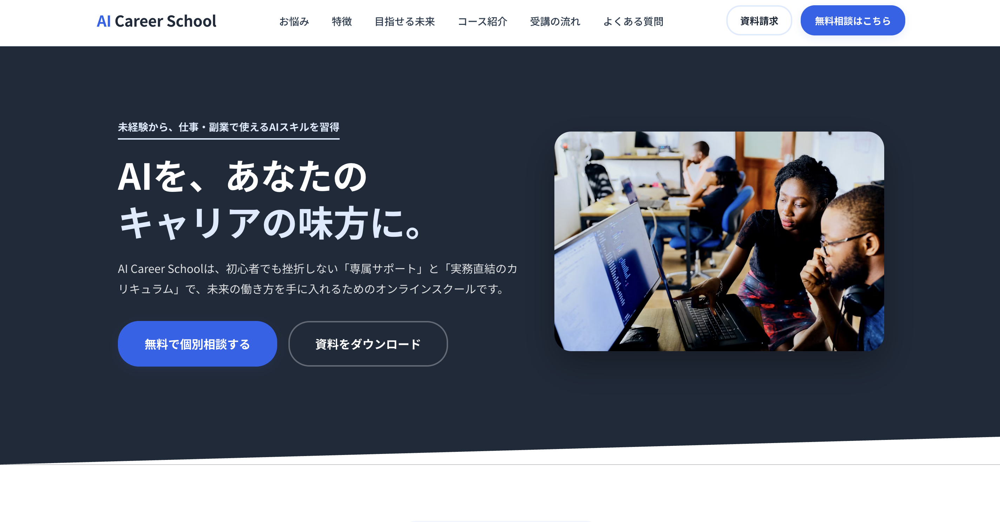
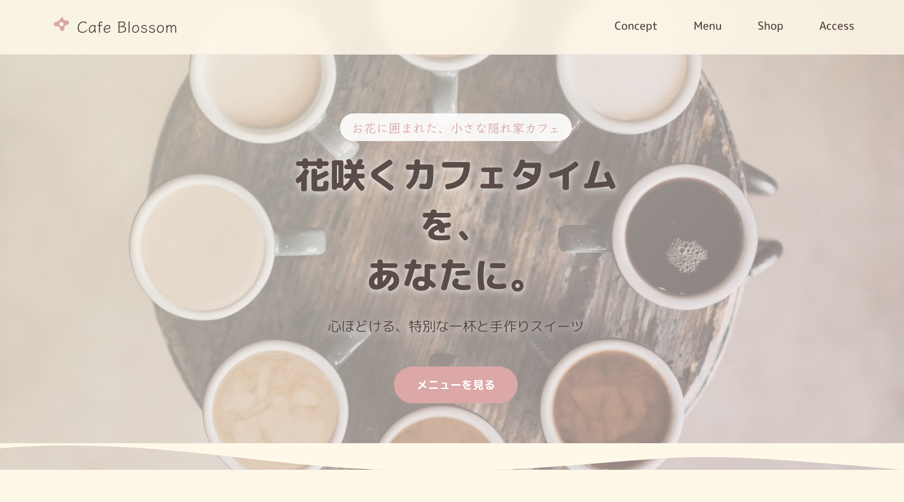
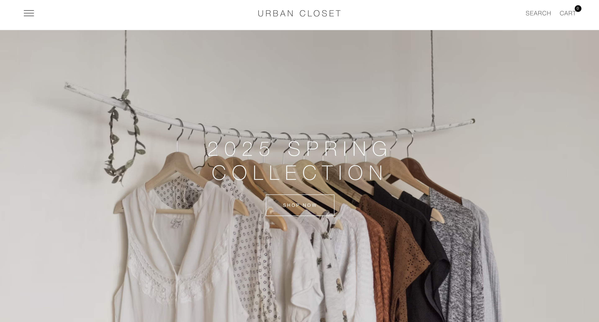

Antigravity / HTML / CSS / JavaScript
AIスクールLP
AIスクールの受講者獲得を目的として制作したランディングページ。視認性の高いレイアウトと行動を促す導線設計を意識しました。

現在はAntigravityを活用しながらWebサイト制作を学習しています。
見やすく、伝わりやすく、使いやすいデザインを意識し、個人事業主や店舗の魅力をWebサイトで届けられるクリエイターを目指しています。
現在はAntigravityを活用したWebサイト制作を中心に学習・制作を行っています。
AIの力を活用しながら、企画・デザイン・実装まで一貫して制作し、ユーザーにとって分かりやすく使いやすいサイト作りを心掛けています。
見る人にとって見やすく、伝わりやすいデザインを意識しながら制作しています。
将来的にはWeb制作を通じて、個人事業主や店舗、企業の魅力をより多くの人へ届けられるクリエイターを目指しています。
AIを活用したWebサイト制作。企画からデザイン・実装まで効率的に制作を行います。
見やすく伝わりやすいレイアウト設計とデザイン制作。
スマートフォン・タブレット・PCに対応したレスポンシブデザイン。
目的に合わせてAIへ適切な指示を行い、品質の高いWebサイトを制作。
ソースコード管理とバージョン管理。
制作・編集環境として活用。

AIスクールの受講者獲得を目的として制作したランディングページ。視認性の高いレイアウトと行動を促す導線設計を意識しました。

女性をターゲットにしたカフェのランディングページ。柔らかい配色と余白を活かし、居心地の良い雰囲気を表現しました。

商品を見やすく整理し、購入までスムーズに進めることを意識して制作したECサイトです。

店舗の魅力やメニュー情報を分かりやすく伝えることを目的に制作。スマートフォンでも見やすいレスポンシブ対応を実装しました。
見た目だけでなく、使いやすさも意識して制作します。
毎日学習を続けながらスキルアップしています。
見る人が迷わず目的にたどり着けるサイト作りを大切にしています。